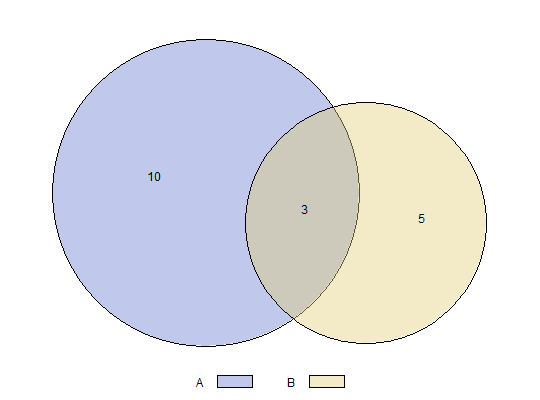
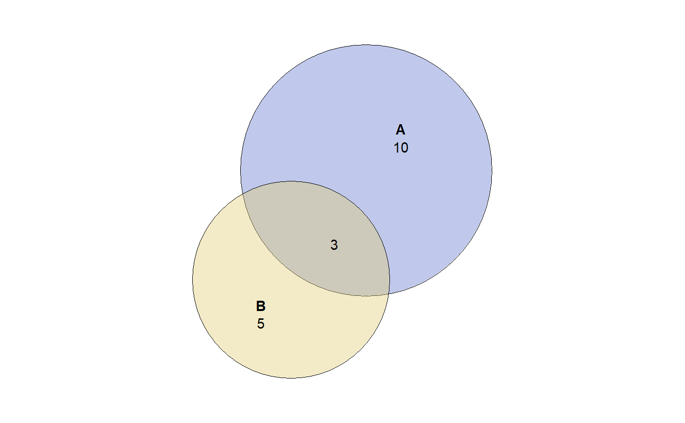
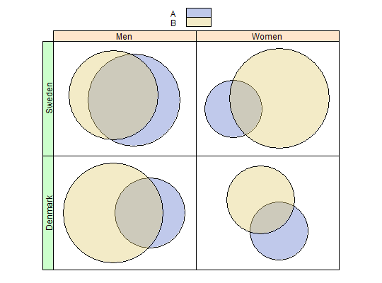
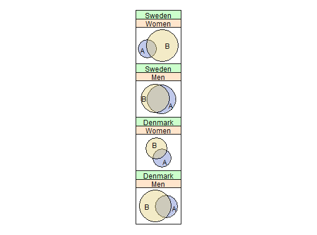

Plot euler diagrams
Plot euler diagrams with trellis graphics from lattice. This function
calls xyplot under the hood, allowing plots of
both individual euler diagrams as well as grids of diagrams
in case the by argument was used in the call to euler.
# S3 method for euler plot(x, fill = NULL, fill_opacity = 0.4, border = "black", lty = 1, lwd = 1, fontface = "plain", cex = 1, labels = NULL, key = FALSE, counts = FALSE, main = NULL, layout = NULL, outer_strips = TRUE, polygon_args, text_args, mar, ...)
Arguments
- x
- euler diagram specification from eulerr
- fill
- Colors to fill circles with.
- fill_opacity
- Opacity of fill colors.
- border
- Border color.
- lty
- Line type(s) for circles. (See
gpar.) - lwd
- Line weight(s) for circles. (See
gpar.) - fontface
- Fontface. (See
gpar.) - cex
- The relative size of text. (See
gpar.) - labels
- Changes the labels from the original call.
- key
- Set to
FALSEto labels the sets,TRUEto automatically generate a legend, or supply a list (please see the entry forauto.keyinxyplot) to fine tune the appreance of the legend. - counts
- Set to
TRUEto label set combinations with counts from the original data (not the fit). - main
- Plot title.
- layout
- For euler grids, specifies the layout for the strip. Cannot be used
in conjunction with
outer_strips, which will be automatically set to false iflayoutis given. - outer_strips
- Whether to place the second level strips on the left of the
trellis plot. (Only applicable when there were 2 factors specifeid to
byin the call toeuler.) - polygon_args
- Deprecated
- text_args
- Deprecated
- mar
- Deprecated
- …
- Arguments to pass to
xyplot.
Value
Invisibly returns a trellis object, which can be updated or modified as usual.
Details
If fill is left blank, eulerr chooses color palettes based on
the number of sets and tries to provide palettes adapted to color vision
deficiencie based on functionality from qualpalr.
Several additional arguments can be handed down to
xyplot via … but be advised that this might cause
undesired conflicts with arguments that are provided inside this function.
It may be safer to use update to provide further
arguments instead.
See also
xyplot, gpar,
grid.circle, panel.xyplot,
euler, qualpal
Examples
# Change to italic roman font, remove borders and switch colors plot(fit, fill = c("dodgerblue4", "darkgoldenrod1"), lwd = 0, fontface = "italic")# Add counts to the plot plot(fit, counts = TRUE)# Add a custom legend and retain counts plot(fit, counts = TRUE, key = list(space = "bottom", columns = 2))# Plot without fills and distinguish sets with border types instead plot(fit, lty = c("solid", "dotted"), fill = "transparent", cex = 2, fontface = 2, labels = c("foo", "bar"))# Plot a grid of euler plots dat <- data.frame( A = sample(c(TRUE, FALSE), size = 100, replace = TRUE), B = sample(c(TRUE, TRUE, FALSE), size = 100, replace = TRUE), gender = sample(c("Men", "Women"), size = 100, replace = TRUE), nation = sample(c("Sweden", "Denmark"), size = 100, replace = TRUE) ) e_grid <- euler(dat[, 1:2], by = dat[, 3:4]) plot(e_grid, key = TRUE)# We can modify the grid layout as well plot(e_grid, layout = c(1, 4))